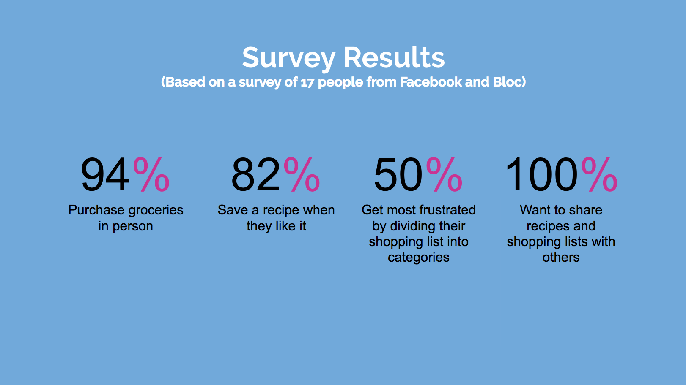

The Problem
Meal planning is an extensive process that often involves searching through multiple resources for new recipes and writing down shopping lists by hand. Delish aims to make this process easier by providing an easy-to-use user interface that allows you to seamlessly browse and save recipes, and create new shopping lists.
The Process
Getting to know the Users
I started with a user survey to figure out what the biggest pain points are for users when creating grocery lists and what features needed to be included in the app. Some of the most significant findings included the following:
Top 5 Biggest Survey Takeaways
- Users want a mobile app they can take to supermarket
- Ease and accessibility were the most commonly referenced reasons for what users like about their shopping list creation tools (with pen & paper + notes app being the most common)
- Access to reviews and a wide variety of food were the most listed requirements for a recipe finding app
- Users want flexibility to add ingredients to their list as they think of them
- Users need to be able to share recipes and shopping lists with others
Competitive Analysis
I analyzed my survey results to see which competitors my survey participants were using, and some of the most popular apps were AnyList, AllRecipes, and Pinterest.
The final Delish product takes the strongest elements from these competitors. It uses a saving and category system that is similar to Pinterest, recipe to shopping list conversion from AllRecipes, and a list creation system that takes elements from AnyList.
Strengths:
- Board and pin system is an intuitive and visually appealing way to save information
- Wide user base
- Feels innovative
- Linked with Twitter and Facebook – easy to share pins with these networks as well
- Allows you to create both private and public boards
Weaknesses:
- Navigation unclear
- CTAs unclear
- Feels innovative
- One of the most powerful uses of pinterest is to pin new content to your board that you find when you are browsing the web, this is not made clear to new users
- Can be hard to sort through spam
All Recipes
Strengths:
- Wider user base
- Huge variety of recipes
- Allows reviews which users value
- Easily allows you to add ingredients from recipe to shopping list
- Automatically categorizes shopping list
Weaknesses:
- Navigation is confusing in app
- Checked off ingredients moved to bottom of list which users found confusing
AnyList
Strengths:
- Intuitive list creation
- Allows you to add your own recipes
- Allows importing recipes from websites
- Allows you to edit list items
- Automatically categorizes shopping list
Weaknesses:
- Not targeted towards grocery list creation specifically
- Filters hard to navigate
- Importing recipes feature has too many instructions
Competitive Analysis User Research
I tested users to see where their biggest frustrations were while using this competitor apps.
In AnyList, they found this recipes section to be a little overwhelming with options and difficult to navigate as a first time user.
The Recipe Web Browser section included a lot of instructions, which none of my testers read. This contributed to my decision to not allow the option to add your own recipes.
Insert photo
With AllRecipes, the biggest pain point for users was navigating between the food detail pages and other sections of the app. The food detail pages have a different navigation structure than all the other pages, which is one of the reasons I decided to have a fixed nav accessible from all pages.
Insert Photo
User Personas
After reviewing my survey results, I interviewed participants to come up with 3 main personas to help understand the target audience. They are summarized below:
The working mom - Needs to find recipes that appeal to picky eaters and easily go back and find what worked. Relies heavily on ratings from others.
The young professional - super busy, doesn’t spend a lot of time at home. Works late nights. Main goals are to reduce the time and ease it takes to meal plan, and stay organized by keeping all recipes in one place.
The staples girl - occasionally searches for new recipes, but primarily has a list of staple shopping lists she goes back to over and over again.
insert assets here
User Stories
My user survey and personas helped me to figure out which features to include and what interactions a user would have with my app:
- User finds new recipes
- Users saves recipes they can easily come back to later
- Users creates new shopping list using saved recipes
- User saves shopping lists they can easily come back to later
- User shares recipes and shopping lists with others
- Users rates recipes and views the ratings of others
User Flows
Based on my user stories, I sketched out what some potential user flows would look like:
Wireframes
I sketched out some initial wireframes by hand and ran them by user testers to make sure they made sense. Then I transferred them to myBalsamic:
Insert wireframs
Some of the features seen in these wireframes got removed as I continued to work on the project. For example, initially, this app was going to allow users to add their own recipes. This would have added complexity to the user interface because the ability to add recipes means that recipes must be editable. If recipes are editable, this would interfere with the user/rating system since you shouldn’t be allowed to edit a recipe that already has multiple user-ratings. i didn’t want to have to distinguish between user recipes and the general user base recipes. Additionally, adding the option to manually add recipes can be distracting from the primary focus of the app.
Wireframe Iterations
(Based on feedback from my mentor and observing feedback as 3-4 people interacted with the wireframes):
- Removed “add a recipe” button and associated functionality
- Added an option to view shopping list by recipe or category
- Added a shopping list history section
- “Create a board” changed to “create a category”
Branding
Initially called Grocery Master, it was at this point I changed the name of the app to Delish after doing some mind-mapping and figuring out what emotions I wanted the brand to convey.
insert images
I also created a style guide. I chose colors that reduce stress (trying to make shopping list creation fun), and inspire creativity. I chose Open Sans for its neutral, yet friendly appearance, and because it was designed to be optimized for mobile interfaces. A light Montserrat body text pairs nicely with Open Sans and is easy to read.
insert style guide
High Fidelity Mockups
With my branding and initial wireframes complete, I moved on to high fidelity mockups, and turned these into prototypes so get some user feedback.
Insert High fidelity mockups
Mockup Interations
Based on feedback from my mentor, I made the following edits:
- Changed the color outline of my search window from blue to grey, and reduced the weight
- Changed the color of my “By Category” button from a blue which contrasted with the hierarchy of the page, to a light purple
User Testing Results
Interview Takeaways
I ran 3 approximately 30-minute sessions with users who had not seen the app before, and asked them to complete a list of tasks, and came up with the following takeaways:
- Users were confused about the existence of a dietary preferences settings section since I had not told them they could change these when they opened the app for the first time
- It was unclear to users if saving a recipe or shopping list had been successful
- Users found the heart-shaped save button to be misleading
- Users could not find the saved shopping lists
New Additions Based on Interview Takeaways
Insert images and explanations
User Tests Based on Feedback
Based on the feedback from my user interviews, I created several user tests
Insert User Test Data
New Additions Based on User Tests
Insert images and explanations
The Solution
Conclusion
I need to do further testing on the shopping list section, with a wider testing base. Some of my testers probably weren’t part of my target audience, so it would be good to be able to narrow down who does the testing as well as get a larger base.
In the future, I may do a rebranding of this app as a healthy recipe browser and shopping list creator to help further differentiate it from AllRecipes.